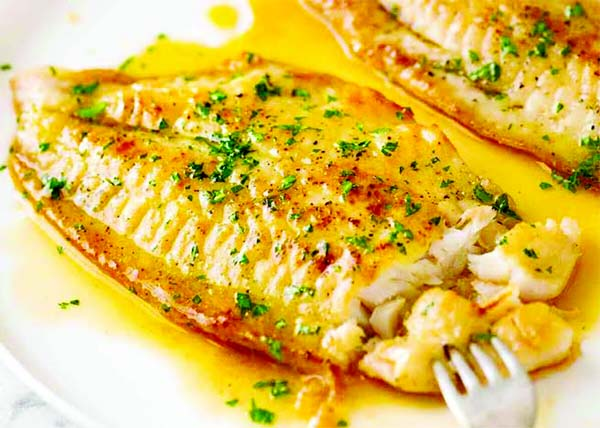

Lemon Butter Fish

Easy Lemon Butter Fish in 20 Minutes
This Easy Lemon Butter Fish only takes 20 minutes and a
handful of ingredients. It’s a delicious and nutritious
white fish recipe. Pair with rice and vegetables for a
healthy weeknight dinner.
Lemon Butter Fish may be more frequently ordered at
restaurants than made at home. It’s not your typical
Tuesday night, in-between carpool fare.
Ingredients
-
Use paper towels to thoroughly pat-dry excess moisture
from fish fillets – this step is crucial for fish to
brown nicely in pan. Set aside.
-
In a bowl, combine melted butter, lemon juice and zest,
and 1/2 tsp kosher salt. Stir to combine well. Taste and
add a bit more kosher salt, if desired.
-
In a separate bowl, combine the remaining 1/2 tsp kosher
salt, paprika, garlic powder, onion powder, and black
pepper. Evenly press spice mixture onto all sides of fish
fillets.
-
In a large, heavy pan over medium high heat, heat up the
olive oil until hot. Once your oil is sizzling,
Cook 2 fish fillets at a time to avoid overcrowding
(allows for even browning.) Cook each side just until fish
becomes opaque, feels somewhat firm in the center, and is
browned – lightly drizzle some of the lemon butter sauce as
you cook, reserving the rest for serving. Take care not to
over-cook, as that will result in a tougher texture. Season
with extra kosher salt and freshly ground black pepper to taste.
-
Serve fish with with remaining lemon butter sauce,
basil or parsley, and lemon wedges.